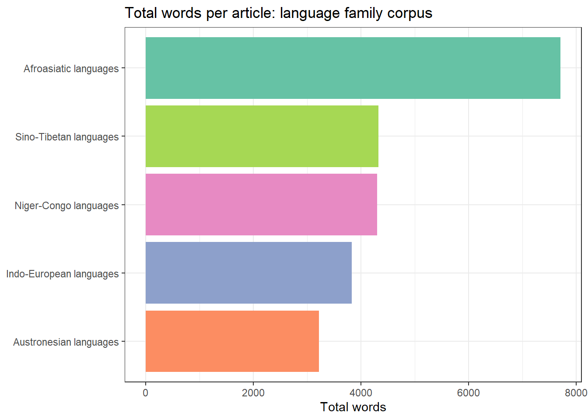

Feature | Web Scraping | API |
|---|---|---|
Data format | Unstructured HTML — requires parsing | Structured JSON or XML — easy to parse |
Stability | Fragile — breaks when site redesigns | Stable — versioned endpoints |
Rate limits | Self-imposed (politeness delay) | Enforced by provider |
Legal clarity | Varies — check ToS carefully | Clear — governed by ToS and OAuth |
Setup effort | Moderate — need to inspect HTML | Low — follow API documentation |
Coverage | Any publicly visible page | Only what the provider exposes |
Typical use | No API available; one-off data collection | Ongoing data collection; service integration |
Web Scraping with R

Introduction
This tutorial introduces web scraping using R. Web scraping is the automated extraction of data from websites — a technique that has become indispensable for researchers who need to collect large amounts of textual or structured data from the internet without manual copy-and-paste.

For linguists and corpus researchers, web scraping opens up access to enormous quantities of naturally occurring language data: online news archives, discussion forums, social media posts, Wikipedia articles, parliamentary transcripts, and much more. Rather than being limited to pre-compiled corpora, researchers can assemble custom datasets tailored precisely to their research question.
The tutorial is aimed at intermediate users of R with some familiarity with HTML. It covers the legal and ethical context of web scraping, the structure of HTML documents, and two complementary R packages — rvest for scraping static pages and RSelenium for scraping dynamic, JavaScript-rendered pages. For deeper coverage of the technical and legal dimensions, see (mitchell2018webscraping?), (munzert2014automated?), and (nolan2014xml?).
Prerequisite Tutorials
Before working through this tutorial, you should be familiar with:
- Getting Started with R — R objects, basic syntax, RStudio
- Loading, Saving, and Generating Data in R — data import, file paths
- Handling Tables in R — data frames,
dplyr, pipes - String Processing in R —
stringr, regular expressions
Learning Objectives
By the end of this tutorial you will be able to:
- Explain what web scraping is and how it differs from using an API
- Identify the legal and ethical constraints on web scraping a given website
- Read and interpret basic HTML structure (tags, attributes, CSS selectors)
- Use
rvestto scrape text, tables, and links from static web pages - Navigate multi-page websites by following pagination links
- Clean and structure scraped text for corpus or quantitative analysis
- Understand when
RSeleniumis needed for JavaScript-rendered content - Apply best practices for polite, reproducible web scraping
Citation
Martin Schweinberger. 2026. Web Scraping with R. The Language Technology and Data Analysis Laboratory (LADAL), The University of Queensland, Australia. url: https://ladal.edu.au/tutorials/webscraping/webscraping.html (Version 2026.03.27), doi: 10.5281/zenodo.19242479.
Concepts and Context
Section Overview
What you will learn: What web scraping is; how it differs from APIs and manual data collection; what legal and ethical constraints apply; and when scraping is the right tool for a linguistic research project
What Is Web Scraping?
Web scraping is the automated extraction of content from web pages by a program that reads the underlying HTML (HyperText Markup Language) source code rather than the rendered visual page. When you visit a website in a browser, the browser downloads an HTML file and renders it visually. A scraper reads the same HTML file and extracts specific pieces of content — text, tables, links, images — without rendering it visually.
Scraping is distinct from:
- Manual copy-and-paste: Scraping is automated and can handle thousands of pages in minutes
- Downloading pre-compiled datasets: Scraping assembles data directly from live web pages
- Using an API: An API (Application Programming Interface) is a structured, officially supported way to retrieve data from a service. When an API exists, it should be preferred over scraping — it is more stable, more polite, and usually legally clearer
Web Scraping vs. APIs
Legal and Ethical Considerations
Web scraping occupies a legally complex space. Key principles to follow:
Check the Terms of Service (ToS). Many websites explicitly prohibit automated scraping in their ToS. Violating ToS may expose researchers to legal risk, particularly under the Computer Fraud and Abuse Act (US) or equivalent legislation in other jurisdictions.
Check robots.txt. Every well-maintained website has a robots.txt file (e.g. https://example.com/robots.txt) that specifies which parts of the site automated crawlers are permitted to access. Respecting robots.txt is a foundational principle of ethical scraping. The robotstxt R package can check this automatically.
Do not overload servers. Use a polite delay (Sys.sleep()) between requests — typically 1–5 seconds. Never scrape at a rate that could constitute a denial-of-service attack.
Personal data and copyright. Scraped text is often protected by copyright. For academic research, fair use/dealing provisions may apply, but this varies by jurisdiction. Scraping personal data (names, email addresses, user profiles) raises GDPR and privacy concerns in Europe.
Prefer public, archival, and openly licensed sources. For corpus linguistics, sites like Project Gutenberg, Wikimedia, and government open-data portals are ideal — they are explicitly designed for programmatic access.
Always Check Before You Scrape
Before scraping any website:
- Read the Terms of Service — look for clauses about “automated access”, “crawling”, or “scraping”
- Check
robots.txt— userobotstxt::paths_allowed() - Add a polite delay —
Sys.sleep(runif(1, 1, 3))between requests - Identify yourself — set a descriptive
User-Agentstring - Cache your results — avoid re-scraping pages you already have
When to Use Web Scraping in Linguistics
Web scraping is appropriate when:
- You need a custom corpus not available in pre-compiled form (e.g. posts from a specific forum, speeches from a specific politician, articles from a specific newspaper)
- You want to track language change over time by scraping the same source repeatedly
- You need metadata alongside text (publication date, author, section) that is not available in downloaded corpora
- You are working with a source that has no API and is too large to collect manually
Web scraping is not appropriate when:
- A suitable API or pre-compiled dataset already exists
- The website’s ToS explicitly prohibits scraping
- The data involves personal information without consent
HTML Fundamentals
Section Overview
What you will learn: How HTML documents are structured; what tags, attributes, and the DOM tree are; how CSS selectors work; and how to use browser developer tools to find the selectors you need for scraping
The Structure of an HTML Document
Every web page is an HTML document — a nested tree of elements. Each element is defined by a tag (e.g. <p>, <h1>, <a>) and may carry attributes (e.g. class, id, href). The content between the opening and closing tag is the element’s text or child elements.
<!DOCTYPE html>
<html>
<head>
<title>Example Page</title>
</head>
<body>
<h1 id="title">Welcome</h1>
<p class="intro">This is the first paragraph.</p>
<p class="intro">This is the second paragraph.</p>
<a href="https://example.com">Click here</a>
<table>
<tr><th>Name</th><th>Score</th></tr>
<tr><td>Alice</td><td>92</td></tr>
<tr><td>Bob</td><td>87</td></tr>
</table>
</body>
</html>Key elements for linguistic scraping:
Tag | Description | Scraping use |
|---|---|---|
`<p>` | Paragraph — the most common container for body text | Body text, article content |
`<h1>` – `<h6>` | Headings — h1 is the page title, h2–h6 are subheadings | Section titles, document structure |
`<a>` | Hyperlink — the `href` attribute contains the URL | Following links, pagination |
`<table>`, `<tr>`, `<td>` | Table, table row, table cell — for structured data | Frequency tables, statistics |
`<div>`, `<span>` | Generic containers — often used to group related content | Identifying content regions by class/id |
`<ul>`, `<ol>`, `<li>` | Unordered list, ordered list, list item | Enumerations, structured content |
`<article>`, `<section>` | Semantic containers for article/section content (HTML5) | Main article text |
`<blockquote>` | Block quotation — often used for cited speech | Quoted speech, dialogue |
CSS Selectors
CSS selectors are patterns that identify elements in an HTML document. They are the primary way to tell a scraper which elements to extract. The most important selector types are:
Selector | Meaning | rvest function |
|---|---|---|
`p` | All `<p>` elements | `html_elements('p')` |
`h1` | All `<h1>` elements | `html_elements('h1')` |
`.intro` | All elements with class `intro` | `html_elements('.intro')` |
`#title` | The element with id `title` | `html_element('#title')` |
`div.content` | `<div>` elements with class `content` | `html_elements('div.content')` |
`p.intro` | `<p>` elements with class `intro` | `html_elements('p.intro')` |
`a[href]` | `<a>` elements that have an `href` attribute | `html_elements('a[href]')` |
`div > p` | `<p>` elements that are direct children of a `<div>` | `html_elements('div > p')` |
`h2 + p` | `<p>` immediately following an `<h2>` | `html_elements('h2 + p')` |
`p:first-child` | `<p>` that is the first child of its parent | `html_elements('p:first-child')` |
Finding Selectors with Browser Developer Tools
The fastest way to find the right CSS selector for a page element is to use your browser’s built-in developer tools:
- Right-click the element you want to scrape and select Inspect (Chrome/Firefox) or Inspect Element (Safari)
- The HTML source for that element is highlighted in the Elements panel
- Look at the tag name,
class, andidattributes to construct your selector - Right-click the highlighted element in the Elements panel → Copy → Copy selector to get an auto-generated CSS selector
- Test the selector in the browser console:
document.querySelectorAll('your.selector')
SelectorGadget
SelectorGadget is a browser bookmarklet that lets you click on page elements to generate CSS selectors interactively. It is particularly useful for complex pages. Install it from the SelectorGadget website and use it alongside rvest to identify selectors without reading raw HTML.
Exercise: HTML and CSS Selectors
Q1. An HTML page contains the following element: <p class="article-body" id="para1">The cat sat on the mat.</p>. Which CSS selector would correctly target this element by its class?
Setup
Installing Packages
Code
# Run once — comment out after installation
install.packages("rvest")
install.packages("httr")
install.packages("robotstxt")
install.packages("tidyverse")
install.packages("flextable")
install.packages("xml2")
install.packages("polite")
install.packages("checkdown")
install.packages("remotes")
remotes::install_github("rlesur/klippy")Loading Packages
Code
library(rvest)
library(httr)
library(robotstxt)
library(tidyverse)
library(flextable)
library(xml2)
library(polite)
library(checkdown)
klippy::klippy()Scraping Static Pages with rvest
Section Overview
What you will learn: The core rvest workflow; how to read a page, select elements, and extract text, attributes, and tables; how to build a scraper for a multi-page source; and how to assemble scraped content into a tidy data frame ready for linguistic analysis
The rvest Workflow
rvest is the standard R package for scraping static HTML pages. Every rvest scraping task follows the same four-step workflow:
- Read the HTML page with
read_html() - Select elements using CSS selectors with
html_elements()orhtml_element() - Extract text, attributes, or table data with
html_text2(),html_attr(), orhtml_table() - Clean the extracted strings with
stringrfunctions
Function | Purpose |
|---|---|
`read_html(url)` | Download and parse an HTML page |
`html_elements(page, css)` | Select *all* matching elements — returns a nodeset |
`html_element(page, css)` | Select *first* matching element — returns one node |
`html_text2(nodes)` | Extract text, preserving whitespace sensibly (preferred) |
`html_text(nodes)` | Extract raw text — may include excess whitespace |
`html_attr(nodes, name)` | Extract a single named attribute (e.g. `href`, `src`) |
`html_attrs(nodes)` | Extract all attributes as a named list |
`html_table(node)` | Parse an HTML `<table>` into a data frame |
`html_children(node)` | Get direct child elements of a node |
`html_name(node)` | Get the tag name of a node (e.g. `'p'`, `'a'`) |
Example 1: Scraping a Single Wikipedia Article
Wikipedia is an ideal first scraping target: it is openly licensed (CC BY-SA), has a clear and consistent HTML structure, and explicitly permits scraping in its ToS (subject to rate limits). We will scrape the Wikipedia article on the English language.
Checking robots.txt
Code
robotstxt::paths_allowed(
paths = "/wiki/English_language",
domain = "en.wikipedia.org"
)[1] TRUEA result of TRUE confirms that Wikipedia’s robots.txt permits access to this path.
Reading and Inspecting the Page
Code
url_wiki <- "https://en.wikipedia.org/wiki/English_language"
# Polite scraping: identify yourself and add a delay
page_wiki <- polite::bow(url_wiki,
user_agent = "LADAL tutorial scraper — contact: m.schweinberger@uq.edu.au") |>
polite::scrape()
# Inspect the class of the returned object
class(page_wiki)[1] "xml_document" "xml_node" Extracting the Article Title
Code
title <- page_wiki |>
html_element("h1#firstHeading") |>
html_text2()
cat("Article title:", title, "\n")Article title: English language Extracting Body Paragraphs
Code
# All <p> elements inside the main content div
paragraphs <- page_wiki |>
html_elements("div#mw-content-text p") |>
html_text2() |>
stringr::str_squish() |> # collapse internal whitespace
stringr::str_subset(".{50,}") # keep only paragraphs with >= 50 chars
cat("Paragraphs extracted:", length(paragraphs), "\n")Paragraphs extracted: 127 Code
cat("\nFirst paragraph:\n", paragraphs[1], "\n")
First paragraph:
English is a West Germanic language that emerged in early medieval England and has since become a global lingua franca.[4][5][6] The namesake of the language is the Angles, one of the Germanic peoples who migrated to Britain after the end of Roman rule. English is the most spoken language in the world, primarily due to the global influences of the former British Empire (succeeded by the Commonwealth of Nations) and the United States. It is the most widely learned second language in the world, with more second-language speakers than native speakers. However, English is only the third-most spoken native language, after Mandarin Chinese and Spanish.[3] Code
cat("\nSecond paragraph:\n", paragraphs[2], "\n")
Second paragraph:
English is either the official language, or one of the official languages, in 57 sovereign states and 30 dependent territories, making it the most geographically widespread language in the world. In the United Kingdom, the United States, Australia, and New Zealand, it is the dominant language for historical reasons without being explicitly defined by law.[7] It is a co-official language of the United Nations, the European Union, and many other international and regional organisations. It has also become the de facto lingua franca of diplomacy, science, technology, international trade, logistics, tourism, aviation, entertainment, and the Internet.[8]Ethnologue estimated that there were over 1.4 billion speakers worldwide as of 2021[update].[3] Extracting Section Headings
Code
headings <- page_wiki |>
html_elements("h2, h3") |>
html_text2() |>
stringr::str_squish() |>
purrr::discard(~ stringr::str_detect(.x, "^(Contents|Navigation|References|Notes|See also|External|Further)"))
head(headings, 10) [1] "Classification" "History"
[3] "Proto-Germanic to Old English" "Influence of Old Norse"
[5] "Middle English" "Early Modern English"
[7] "Spread of Modern English" "Geographical distribution"
[9] "Three circles model" "Pluricentric English" Extracting Links
Code
# All internal Wikipedia links in the article body
links <- page_wiki |>
html_elements("div#mw-content-text a[href^='/wiki/']") |>
html_attr("href") |>
stringr::str_subset("^/wiki/[^:]+$") |> # exclude special pages (File:, Talk:, etc.)
unique() |>
head(20)
# Convert to full URLs
full_links <- paste0("https://en.wikipedia.org", links)
head(full_links, 10) [1] "https://en.wikipedia.org/wiki/English-speaking_world"
[2] "https://en.wikipedia.org/wiki/United_Kingdom"
[3] "https://en.wikipedia.org/wiki/United_States"
[4] "https://en.wikipedia.org/wiki/Canada"
[5] "https://en.wikipedia.org/wiki/Australia"
[6] "https://en.wikipedia.org/wiki/Republic_of_Ireland"
[7] "https://en.wikipedia.org/wiki/New_Zealand"
[8] "https://en.wikipedia.org/wiki/Commonwealth_Caribbean"
[9] "https://en.wikipedia.org/wiki/South_Africa"
[10] "https://en.wikipedia.org/wiki/List_of_countries_and_territories_where_English_is_an_official_language"Putting It Together: A Clean Article Data Frame
Code
wiki_df <- tibble::tibble(
source = "Wikipedia",
article = title,
paragraph = seq_along(paragraphs),
text = paragraphs,
n_words = stringr::str_count(paragraphs, "\\S+")
)
wiki_df |>
head(5) |>
flextable() |>
flextable::set_table_properties(width = 1, layout = "autofit") |>
flextable::theme_zebra() |>
flextable::fontsize(size = 10) |>
flextable::set_caption("Scraped Wikipedia paragraphs as a tidy data frame")source | article | paragraph | text | n_words |
|---|---|---|---|---|
Wikipedia | English language | 1 | English is a West Germanic language that emerged in early medieval England and has since become a global lingua franca.[4][5][6] The namesake of the language is the Angles, one of the Germanic peoples who migrated to Britain after the end of Roman rule. English is the most spoken language in the world, primarily due to the global influences of the former British Empire (succeeded by the Commonwealth of Nations) and the United States. It is the most widely learned second language in the world, with more second-language speakers than native speakers. However, English is only the third-most spoken native language, after Mandarin Chinese and Spanish.[3] | 105 |
Wikipedia | English language | 2 | English is either the official language, or one of the official languages, in 57 sovereign states and 30 dependent territories, making it the most geographically widespread language in the world. In the United Kingdom, the United States, Australia, and New Zealand, it is the dominant language for historical reasons without being explicitly defined by law.[7] It is a co-official language of the United Nations, the European Union, and many other international and regional organisations. It has also become the de facto lingua franca of diplomacy, science, technology, international trade, logistics, tourism, aviation, entertainment, and the Internet.[8]Ethnologue estimated that there were over 1.4 billion speakers worldwide as of 2021[update].[3] | 108 |
Wikipedia | English language | 3 | Old English emerged from a group of West Germanic dialects spoken by the Anglo-Saxons. Early inscriptions were written with runes before a Latin-based alphabet was adopted for longer texts. Late Old English borrowed some grammar and core vocabulary from Old Norse, a North Germanic language.[9][10][11] An evolution of the Latin alphabet, the English alphabet, fully supplanted the runic alphabet by the High Middle Ages, coinciding with the emergence of Middle English in England under Norman control. Middle English borrowed vocabulary extensively from French dialects, which are the source of approximately 28 per cent of Modern English words, and from Latin, which is the source of an additional 28 per cent.[12] While Latin and the Romance languages are thus the source for a majority of its lexicon taken as a whole, English's grammar and phonology remain Germanic, as does most of its basic everyday vocabulary. Finally, Middle English transformed, in part through the Great Vowel Shift, into Modern English, which exists on a dialect continuum with Scots; it is next-most closely related to Low Saxon and Frisian. | 176 |
Wikipedia | English language | 4 | English is a member of the Indo-European language family, belonging to the West Germanic branch of Germanic languages.[13] Owing to their descent from a shared ancestor language known as Proto-Germanic, English and other Germanic languages – which include Dutch, German, and Swedish[14] – have characteristic features in common, including a division of verbs into strong and weak classes, the use of modal verbs, and sound changes affecting Proto-Indo-European consonants known as Grimm's and Verner's laws.[15] | 75 |
Wikipedia | English language | 5 | Old English was one of several Ingvaeonic languages, which emerged from a dialect continuum spoken by West Germanic peoples during the 5th century in Frisia, on the coast of the North Sea. Old English emerged among the Ingvaeonic speakers on the British Isles following their migration there, while the other Ingvaeonic languages (Frisian and Old Low German) developed in parallel on the continent.[16] Old English evolved into Middle English, which in turn evolved into Modern English.[17] Particular dialects of Old and Middle English also developed into other Anglic languages, including Scots[18] and the extinct Fingallian and Yola dialects of Ireland.[19] | 100 |
Code
cat("Total paragraphs:", nrow(wiki_df), "\n")Total paragraphs: 127 Code
cat("Total words (approx):", sum(wiki_df$n_words), "\n")Total words (approx): 12635 Code
cat("Mean paragraph length:", round(mean(wiki_df$n_words), 1), "words\n")Mean paragraph length: 99.5 wordsExample 2: Scraping an HTML Table
rvest can parse HTML tables directly into R data frames with html_table(). We demonstrate by scraping the table of most-spoken languages from Wikipedia.
Code
url_lang <- "https://en.wikipedia.org/wiki/List_of_languages_by_total_number_of_speakers"
page_lang <- polite::bow(url_lang,
user_agent = "LADAL tutorial scraper") |>
polite::scrape()
# Find all tables on the page
tables <- page_lang |> html_elements("table.wikitable")
cat("Tables found:", length(tables), "\n")Tables found: 3 Code
# Parse the first table
lang_table <- tables[[1]] |>
html_table(fill = TRUE) |>
janitor::clean_names() |>
dplyr::select(1:4) |>
head(15)
lang_table |>
flextable() |>
flextable::set_table_properties(width = .8, layout = "autofit") |>
flextable::theme_zebra() |>
flextable::fontsize(size = 10) |>
flextable::set_caption("Most-spoken languages: scraped from Wikipedia")language | family | branch | numbers_of_speakers_millions |
|---|---|---|---|
Language | Family | Branch | First-language(L1) |
English(excl. creole languages) | Indo-European | Germanic | 372 |
Mandarin Chinese(incl. Standard Chinese but excl. other varieties) | Sino-Tibetan | Sinitic | 988 |
Hindi(excl. Urdu) | Indo-European | Indo-Aryan | 347 |
Spanish(excl. creole languages) | Indo-European | Romance | 487 |
Modern Standard Arabic(excl. dialects) | Afro-Asiatic | Semitic | 0[a] |
French(excl. creole languages) | Indo-European | Romance | 75 |
Bengali | Indo-European | Indo-Aryan | 234 |
Portuguese(excl. creole languages) | Indo-European | Romance | 252 |
Indonesian | Austronesian | Malayo-Polynesian | 78 |
Urdu(excl. Hindi) | Indo-European | Indo-Aryan | 78 |
Russian | Indo-European | Balto-Slavic | 133 |
Standard German | Indo-European | Germanic | 76 |
Japanese | Japonic | —.mw-parser-output .sr-only{border:0;clip:rect(0,0,0,0);clip-path:polygon(0px 0px,0px 0px,0px 0px);height:1px;margin:-1px;overflow:hidden;padding:0;position:absolute;width:1px;white-space:nowrap}N/a | 124 |
Nigerian Pidgin | English Creole | Krio | 5 |
html_table() Tips
- Use
fill = TRUEto handle tables with merged cells (colspan/rowspan) — otherwise the function may throw an error - The first row is treated as the header by default (
header = TRUE) - Use
janitor::clean_names()to convert messy column names (with spaces, special characters) to clean snake_case R variable names - If a page has multiple tables,
html_elements("table")returns all of them as a list — use[[i]]to select the one you want
Exercise: The
rvest Workflow
Q2. You want to extract the text of all <h2> headings from a Wikipedia page stored in the object page. Which rvest code is correct?
Example 3: Scraping Multiple Pages
Most real corpus-building tasks require scraping many pages. The workflow is: (1) collect a list of URLs, (2) loop over them with a polite delay, (3) apply the same extraction function to each page.
We demonstrate by scraping several Wikipedia articles on language families.
Step 1 — Define the URLs
Code
lang_families <- tibble::tibble(
family = c("Indo-European languages", "Sino-Tibetan languages",
"Niger-Congo languages", "Afroasiatic languages",
"Austronesian languages"),
url = c(
"https://en.wikipedia.org/wiki/Indo-European_languages",
"https://en.wikipedia.org/wiki/Sino-Tibetan_languages",
"https://en.wikipedia.org/wiki/Niger-Congo_languages",
"https://en.wikipedia.org/wiki/Afroasiatic_languages",
"https://en.wikipedia.org/wiki/Austronesian_languages"
)
)
lang_families# A tibble: 5 × 2
family url
<chr> <chr>
1 Indo-European languages https://en.wikipedia.org/wiki/Indo-European_languages
2 Sino-Tibetan languages https://en.wikipedia.org/wiki/Sino-Tibetan_languages
3 Niger-Congo languages https://en.wikipedia.org/wiki/Niger-Congo_languages
4 Afroasiatic languages https://en.wikipedia.org/wiki/Afroasiatic_languages
5 Austronesian languages https://en.wikipedia.org/wiki/Austronesian_languages Step 2 — Write a Scraping Function
Code
scrape_wiki_article <- function(url, label) {
# Polite delay
Sys.sleep(runif(1, 1, 2))
tryCatch({
page <- polite::bow(url, user_agent = "LADAL tutorial scraper") |>
polite::scrape()
paragraphs <- page |>
html_elements("div#mw-content-text p") |>
html_text2() |>
stringr::str_squish() |>
stringr::str_subset(".{50,}")
tibble::tibble(
family = label,
paragraph = seq_along(paragraphs),
text = paragraphs,
n_words = stringr::str_count(paragraphs, "\\S+")
)
}, error = function(e) {
message("Failed to scrape: ", url, " — ", e$message)
tibble::tibble(family = label, paragraph = NA_integer_,
text = NA_character_, n_words = NA_integer_)
})
}
Always Use
tryCatch() in Scraping Loops
Scraping loops can fail for many reasons: the server is temporarily down, a page has a different structure than expected, or a network timeout occurs. Wrapping each scraping call in tryCatch() ensures that a single failure does not abort the entire loop — the function returns NA for failed pages and continues.
Step 3 — Loop Over URLs
Code
# Map over all URLs and combine results
corpus_df <- purrr::map2_dfr(
lang_families$url,
lang_families$family,
scrape_wiki_article
)
cat("Total paragraphs collected:", nrow(corpus_df), "\n")Total paragraphs collected: 292 Code
cat("Articles successfully scraped:",
n_distinct(corpus_df$family[!is.na(corpus_df$text)]), "\n")Articles successfully scraped: 5 Step 4 — Inspect and Summarise
Code
corpus_df |>
dplyr::filter(!is.na(text)) |>
dplyr::group_by(family) |>
dplyr::summarise(
Paragraphs = n(),
Words = sum(n_words),
MeanParLen = round(mean(n_words), 1)
) |>
flextable() |>
flextable::set_table_properties(width = .75, layout = "autofit") |>
flextable::theme_zebra() |>
flextable::fontsize(size = 11) |>
flextable::set_caption("Corpus summary: language family Wikipedia articles")family | Paragraphs | Words | MeanParLen |
|---|---|---|---|
Afroasiatic languages | 73 | 7,710 | 105.6 |
Austronesian languages | 44 | 3,224 | 73.3 |
Indo-European languages | 52 | 3,833 | 73.7 |
Niger-Congo languages | 60 | 4,300 | 71.7 |
Sino-Tibetan languages | 63 | 4,325 | 68.7 |
Code
corpus_df |>
dplyr::filter(!is.na(text)) |>
dplyr::group_by(family) |>
dplyr::summarise(Words = sum(n_words)) |>
ggplot(aes(x = Words,
y = reorder(family, Words),
fill = family)) +
geom_col(show.legend = FALSE) +
scale_fill_brewer(palette = "Set2") +
theme_bw() +
labs(title = "Total words per article: language family corpus",
x = "Total words", y = NULL)
Exercise: Multi-Page Scraping
Q3. You are scraping 200 Wikipedia articles in a loop. After collecting all texts you notice that 12 articles returned NA for the text column. What is the most likely cause, and what should you do?
Example 4: Scraping and Cleaning Text for Corpus Analysis
Raw scraped text typically contains artefacts — reference numbers, excess whitespace, boilerplate navigation text — that need to be removed before linguistic analysis. This section demonstrates a cleaning pipeline.
Code
# Take the first article as an example
raw_text <- corpus_df |>
dplyr::filter(family == "Indo-European languages", !is.na(text)) |>
dplyr::pull(text)
# Cleaning pipeline
clean_text <- raw_text |>
stringr::str_remove_all("\\[\\d+\\]") |> # remove Wikipedia footnote refs [1], [2]
stringr::str_remove_all("\\([^)]{0,6}\\)") |> # remove very short parentheticals
stringr::str_squish() |> # normalise whitespace
stringr::str_subset(".{30,}") # drop very short fragments
cat("Paragraphs before cleaning:", length(raw_text), "\n")Paragraphs before cleaning: 52 Code
cat("Paragraphs after cleaning:", length(clean_text), "\n")Paragraphs after cleaning: 52 Code
cat("\nSample cleaned paragraph:\n", clean_text[3], "\n")
Sample cleaned paragraph:
All Indo-European languages are descended from a single prehistoric language, linguistically reconstructed as Proto-Indo-European, spoken sometime during the Neolithic or early Bronze Age (c. 3300 – c. 1200 BC). The geographical location where it was spoken, the Proto-Indo-European homeland, has been the object of many competing hypotheses; the academic consensus supports the Kurgan hypothesis, which posits the homeland to be the Pontic–Caspian steppe in what is now Ukraine and Southern Russia, associated with the Yamnaya culture and other related archaeological cultures during the 4th and early 3rd millennia BC. By the time the first written records appeared, Indo-European had already evolved into numerous languages, spoken across much of Europe, South Asia, and part of Western Asia. Written evidence of Indo-European appeared during the Bronze Age in the form of Mycenaean Greek and the Anatolian languages of Hittite and Luwian. The oldest records are isolated Hittite words and names, interspersed in texts that are otherwise in the unrelated Akkadian language (a Semitic language) found in texts of the Assyrian colony of Kültepe in eastern Anatolia dating to the 20th century BC. Although no older written records of the original Proto-Indo-European population remain, some aspects of their culture and their religion can be reconstructed from later evidence in the daughter cultures. The Indo-European family is significant to the field of historical linguistics as it possesses the second-longest recorded history of any known family after Egyptian and the Semitic languages, which belong to the Afroasiatic language family. The analysis of the family relationships between the Indo-European languages, and the reconstruction of their common source, was central to the development of the methodology of historical linguistics as an academic discipline in the 19th century. Code
# Simple tokenisation: one row per word
tokens_df <- tibble::tibble(text = clean_text) |>
tidytext::unnest_tokens(word, text) |>
dplyr::count(word, sort = TRUE)
cat("Unique word types:", nrow(tokens_df), "\n")Unique word types: 1229 Code
cat("Total tokens:", sum(tokens_df$n), "\n")Total tokens: 4008 Code
# Top 15 content words (excluding stopwords)
tokens_df |>
dplyr::anti_join(tidytext::stop_words, by = "word") |>
head(15) |>
flextable() |>
flextable::set_table_properties(width = .35, layout = "autofit") |>
flextable::theme_zebra() |>
flextable::fontsize(size = 11) |>
flextable::set_caption("Top 15 content words: Indo-European languages article")word | n |
|---|---|
indo | 91 |
european | 80 |
languages | 76 |
language | 44 |
branches | 19 |
family | 19 |
germanic | 16 |
proto | 15 |
common | 13 |
english | 13 |
pie | 13 |
greek | 12 |
latin | 11 |
anatolian | 10 |
europe | 10 |
Pagination and Link Following
Section Overview
What you will learn: How to identify and follow pagination links; how to scrape across multi-page results; and how to build a depth-limited crawler that follows internal links
Identifying Pagination Links
Many websites spread content across multiple pages — news archives, search results, forum threads. The typical pattern is a “Next page” link or numbered page links at the bottom of each page.
Code
# General pattern for following a "next page" link
scrape_with_pagination <- function(start_url, max_pages = 10) {
results <- list()
next_url <- start_url
page_num <- 1
while (!is.null(next_url) && page_num <= max_pages) {
message("Scraping page ", page_num, ": ", next_url)
Sys.sleep(runif(1, 1, 2)) # polite delay
page <- tryCatch(
polite::bow(next_url, user_agent = "LADAL tutorial scraper") |>
polite::scrape(),
error = function(e) NULL
)
if (is.null(page)) break
# Extract content from this page (adapt selector to target site)
content <- page |>
html_elements("p") |>
html_text2() |>
stringr::str_squish() |>
stringr::str_subset(".{50,}")
results[[page_num]] <- tibble::tibble(
page = page_num,
text = content
)
# Find next page link — adapt CSS selector to target site
next_href <- page |>
html_element("a.next-page, a[rel='next'], li.next a") |>
html_attr("href")
# Resolve relative URLs
if (!is.na(next_href) && !is.null(next_href)) {
next_url <- xml2::url_absolute(next_href, next_url)
} else {
next_url <- NULL # no more pages
}
page_num <- page_num + 1
}
dplyr::bind_rows(results)
}
Resolving Relative URLs
Many pagination links use relative URLs (e.g. /page/2 or ?page=2) rather than absolute URLs (e.g. https://example.com/page/2). Always use xml2::url_absolute(relative_url, base_url) to convert relative to absolute URLs before passing them to read_html() or polite::scrape().
Collecting Links from an Index Page
A common pattern in corpus building is: (1) scrape an index/archive page to collect article URLs, (2) scrape each article URL. This is more reliable than pagination because you can inspect and validate the URL list before scraping.
Code
# Example: collect all language-related article links from a Wikipedia category page
url_category <- "https://en.wikipedia.org/wiki/Category:Language_families"
cat_page <- tryCatch(
polite::bow(url_category, user_agent = "LADAL tutorial scraper") |>
polite::scrape(),
error = function(e) NULL
)
if (!is.null(cat_page)) {
article_links <- cat_page |>
html_elements("div.mw-category a") |>
html_attr("href") |>
stringr::str_subset("^/wiki/[^:]+$") |>
paste0("https://en.wikipedia.org", x = _) |>
unique()
cat("Article links found:", length(article_links), "\n")
head(article_links, 8)
} else {
cat("Page could not be retrieved\n")
}Article links found: 200 [1] "https://en.wikipedia.org/wiki/Language_family"
[2] "https://en.wikipedia.org/wiki/Ethnologue"
[3] "https://en.wikipedia.org/wiki/Glottolog"
[4] "https://en.wikipedia.org/wiki/List_of_language_families"
[5] "https://en.wikipedia.org/wiki/List_of_proposed_language_families"
[6] "https://en.wikipedia.org/wiki/Afroasiatic_languages"
[7] "https://en.wikipedia.org/wiki/Alacalufan_languages"
[8] "https://en.wikipedia.org/wiki/Algic_languages" Saving and Caching Scraped Data
Section Overview
What you will learn: Why caching scraped data locally is essential; how to save intermediate results; and how to structure a reproducible scraping project
Why Cache?
Scraping is time-consuming and places load on servers. Always save scraped data locally immediately after collection so you can:
- Re-analyse without re-scraping
- Avoid re-scraping if your analysis script fails
- Demonstrate reproducibility — the saved data is a snapshot of the source at a specific time
- Comply with server rate limits — you only scrape each page once
Saving as Plain Text and CSV
Code
# Save the cleaned corpus as CSV
readr::write_csv(corpus_df, here::here("data/language_families_corpus.csv"))
# Save individual articles as plain text files
corpus_df |>
dplyr::filter(!is.na(text)) |>
dplyr::group_by(family) |>
dplyr::group_walk(function(data, key) {
fname <- stringr::str_replace_all(key$family, "\\s+", "_")
fname <- paste0(here::here("data/texts/"), fname, ".txt")
writeLines(data$text, fname)
})Saving as RDS
For complex scraped objects (lists, nested data frames), RDS format preserves R data types exactly:
Code
# Save the full corpus data frame
saveRDS(corpus_df, here::here("data/language_families_corpus.rds"))
# Reload later
corpus_df <- readRDS(here::here("data/language_families_corpus.rds"))Checking Before Re-Scraping
A simple caching pattern avoids redundant requests:
Code
scrape_with_cache <- function(url, cache_dir = "cache") {
# Create a filename from the URL
fname <- file.path(cache_dir,
paste0(digest::digest(url, algo = "md5"), ".rds"))
if (file.exists(fname)) {
message("Loading from cache: ", url)
return(readRDS(fname))
}
message("Scraping: ", url)
Sys.sleep(runif(1, 1, 2))
page <- polite::bow(url, user_agent = "LADAL tutorial scraper") |>
polite::scrape()
saveRDS(page, fname)
page
}Dynamic Pages and RSelenium
Section Overview
What you will learn: What dynamic (JavaScript-rendered) pages are; why rvest cannot scrape them; and how RSelenium controls a real browser to access dynamically loaded content
Static vs. Dynamic Pages
rvest works by downloading the HTML source code of a page and parsing it. This works perfectly for static pages where all content is embedded in the HTML at the time of download.
However, many modern websites are dynamic: the initial HTML contains little content, and JavaScript running in the browser makes additional requests to a server API and injects the content into the page after it loads. If you download the HTML source of such a page, you see only the empty skeleton — not the content visible in the browser.
Feature | Static page | Dynamic page |
|---|---|---|
How content is delivered | All content in the HTML response | Content loaded by JavaScript after page load |
HTML at load time | Complete — ready to parse | Skeleton only — content added later |
Requires JavaScript? | No | Yes |
Scraping tool | `rvest` / `httr` | `RSelenium` or `playwright` |
Speed | Fast | Slow (real browser overhead) |
Complexity | Low | High |
Typical examples | Wikipedia, Project Gutenberg, government sites | Twitter/X, Reddit, many news sites, Single-Page Apps |
How RSelenium Works
RSelenium controls a real web browser (Chrome, Firefox) programmatically. It can click buttons, fill in forms, scroll, and wait for JavaScript to finish rendering — all the things a human user does. The scraped HTML is taken from the fully rendered page, so JavaScript-loaded content is visible.
Code
library(RSelenium)
# Start a headless Chrome browser
rD <- rsDriver(browser = "chrome",
chromever = "latest",
headless = TRUE, # TRUE = no visible window
verbose = FALSE)
driver <- rD[["client"]]
# Navigate to a page
driver$navigate("https://example.com")
# Wait for JavaScript to load (adjust seconds as needed)
Sys.sleep(3)
# Get the fully rendered page source
page_source <- driver$getPageSource()[[1]]
# Parse with rvest as usual
page <- read_html(page_source)
content <- page |> html_elements("p") |> html_text2()
# Always close the browser when done
driver$close()
rD[["server"]]$stop()Interacting with Page Elements
RSelenium can click, type, and scroll — essential for pages that require login, search, or infinite scroll:
Code
# Find a search box and type a query
search_box <- driver$findElement(using = "css selector", value = "input[name='q']")
search_box$sendKeysToElement(list("language change corpus"))
# Click the search button
search_btn <- driver$findElement(using = "css selector", value = "button[type='submit']")
search_btn$clickElement()
# Wait for results to load
Sys.sleep(2)
# Scroll to the bottom of the page (for infinite scroll)
driver$executeScript("window.scrollTo(0, document.body.scrollHeight);")
Sys.sleep(2)
# Extract results
page_source <- driver$getPageSource()[[1]]
results <- read_html(page_source) |>
html_elements("div.result-title") |>
html_text2()RSelenium Setup Requirements
RSelenium requires:
- A compatible browser installed (Chrome or Firefox)
- A matching WebDriver binary (
chromedriverfor Chrome,geckodriverfor Firefox) - Java (for the Selenium server)
Use wdman::chrome() or wdman::gecko() to manage driver downloads automatically. For a simpler alternative on modern systems, consider the chromote package, which uses Chrome’s DevTools Protocol directly without requiring a Selenium server.
Exercise: Static vs. Dynamic Pages
Q4. You try to scrape a news website with rvest but the returned text is empty even though the articles are clearly visible in your browser. What is the most likely explanation?
Best Practices
Section Overview
What you will learn: A consolidated checklist of best practices for ethical, robust, and reproducible web scraping in a research context
The Polite Scraper Checklist
Practice | Why | How in R |
|---|---|---|
Check Terms of Service | ToS violations can have legal consequences | Manual check; no package |
Respect robots.txt | robots.txt is the site's machine-readable scraping policy | `robotstxt::paths_allowed()` |
Use the `polite` package | Automatically checks robots.txt and adds delays | `polite::bow()` + `polite::scrape()` |
Add random delays | Prevents server overload; mimics human browsing patterns | `Sys.sleep(runif(1, 1, 3))` |
Set a descriptive User-Agent | Identifies your bot; allows site owners to contact you | `polite::bow(user_agent = '...')` |
Cache results locally | Avoids redundant requests; enables reproducibility | `saveRDS()` / `readr::write_csv()` |
Use tryCatch() in loops | Prevents loop failure on a single bad page | `tryCatch(expr, error = function(e) NULL)` |
Scrape during off-peak hours | Reduces impact on production traffic | Manual scheduling |
Limit concurrency | Never use parallel scraping on a single domain | Use `purrr::map()` not `parallel::mclapply()` |
Document your scraper | Record URL source, scrape date, and cleaning steps | Add comments; save metadata with data |
The polite Package
The polite package (perepolkin2023polite?) encapsulates several best practices in two functions:
bow(url, user_agent = "...")— introduces your scraper to the server, checksrobots.txt, and creates a session objectscrape(session)— downloads the page with an automatic delay, respecting the crawl delay specified inrobots.txt(or defaulting to 5 seconds)
Code
# Polite scraping in two lines
session <- polite::bow(
"https://en.wikipedia.org/wiki/Linguistics",
user_agent = "LADAL tutorial scraper — m.schweinberger@uq.edu.au"
)
# The session object shows robots.txt status and delay
session<polite session> https://en.wikipedia.org/wiki/Linguistics
User-agent: LADAL tutorial scraper — m.schweinberger@uq.edu.au
robots.txt: 464 rules are defined for 34 bots
Crawl delay: 5 sec
The path is scrapable for this user-agent
Exercise: Best Practices
Q5. A researcher wants to scrape 5,000 pages from a news archive as quickly as possible. She sets up a parallel scraping loop with 10 concurrent connections and no delay. What problems could this cause?
Citation and Session Info
Citation
Martin Schweinberger. 2026. Web Scraping with R. The Language Technology and Data Analysis Laboratory (LADAL), The University of Queensland, Australia. url: https://ladal.edu.au/tutorials/webscraping/webscraping.html (Version 2026.03.27), doi: 10.5281/zenodo.19242479.
@manual{martinschweinberger2026web,
author = {Martin Schweinberger},
title = {Web Scraping with R},
year = {2026},
note = {https://ladal.edu.au/tutorials/webscraping/webscraping.html},
organization = {The Language Technology and Data Analysis Laboratory (LADAL), The University of Queensland, Australia},
edition = {2026.03.27}
doi = {10.5281/zenodo.19242479}
}Code
sessionInfo()R version 4.4.2 (2024-10-31 ucrt)
Platform: x86_64-w64-mingw32/x64
Running under: Windows 11 x64 (build 26200)
Matrix products: default
locale:
[1] LC_COLLATE=English_United States.utf8
[2] LC_CTYPE=English_United States.utf8
[3] LC_MONETARY=English_United States.utf8
[4] LC_NUMERIC=C
[5] LC_TIME=English_United States.utf8
time zone: Australia/Brisbane
tzcode source: internal
attached base packages:
[1] stats graphics grDevices datasets utils methods base
other attached packages:
[1] polite_0.1.3 xml2_1.3.6 lubridate_1.9.4 forcats_1.0.0
[5] stringr_1.5.1 dplyr_1.2.0 purrr_1.0.4 readr_2.1.5
[9] tidyr_1.3.2 tibble_3.2.1 ggplot2_4.0.2 tidyverse_2.0.0
[13] robotstxt_0.7.15 httr_1.4.7 rvest_1.0.4 checkdown_0.0.13
[17] flextable_0.9.11
loaded via a namespace (and not attached):
[1] tidyselect_1.2.1 farver_2.1.2 S7_0.2.1
[4] fastmap_1.2.0 janeaustenr_1.0.0 fontquiver_0.2.1
[7] janitor_2.2.1 digest_0.6.39 timechange_0.3.0
[10] mime_0.12 lifecycle_1.0.5 tokenizers_0.3.0
[13] magrittr_2.0.3 compiler_4.4.2 rlang_1.1.7
[16] tools_4.4.2 tidytext_0.4.2 utf8_1.2.4
[19] yaml_2.3.10 data.table_1.17.0 knitr_1.51
[22] labeling_0.4.3 askpass_1.2.1 htmlwidgets_1.6.4
[25] curl_6.2.1 RColorBrewer_1.1-3 klippy_0.0.0.9500
[28] withr_3.0.2 grid_4.4.2 spiderbar_0.2.5
[31] gdtools_0.5.0 future_1.34.0 globals_0.16.3
[34] scales_1.4.0 cli_3.6.4 rmarkdown_2.30
[37] ragg_1.3.3 generics_0.1.3 rstudioapi_0.17.1
[40] future.apply_1.11.3 tzdb_0.4.0 commonmark_2.0.0
[43] cachem_1.1.0 ratelimitr_0.4.2 assertthat_0.2.1
[46] parallel_4.4.2 selectr_0.4-2 vctrs_0.7.1
[49] Matrix_1.7-2 jsonlite_1.9.0 fontBitstreamVera_0.1.1
[52] litedown_0.9 hms_1.1.3 patchwork_1.3.0
[55] listenv_0.9.1 systemfonts_1.3.1 glue_1.8.0
[58] parallelly_1.42.0 codetools_0.2-20 stringi_1.8.4
[61] gtable_0.3.6 pillar_1.10.1 htmltools_0.5.9
[64] openssl_2.3.2 R6_2.6.1 textshaping_1.0.0
[67] lattice_0.22-6 evaluate_1.0.3 markdown_2.0
[70] SnowballC_0.7.1 snakecase_0.11.1 memoise_2.0.1
[73] renv_1.1.7 fontLiberation_0.1.0 Rcpp_1.1.1
[76] zip_2.3.2 uuid_1.2-1 officer_0.7.3
[79] xfun_0.56 fs_1.6.5 usethis_3.1.0
[82] pkgconfig_2.0.3
AI Transparency Statement
This tutorial was written with the assistance of Claude (claude.ai), a large language model created by Anthropic. Claude was used to write and structure the full tutorial on web scraping with R. All content was reviewed and approved by Martin Schweinberger, who takes full responsibility for its accuracy.